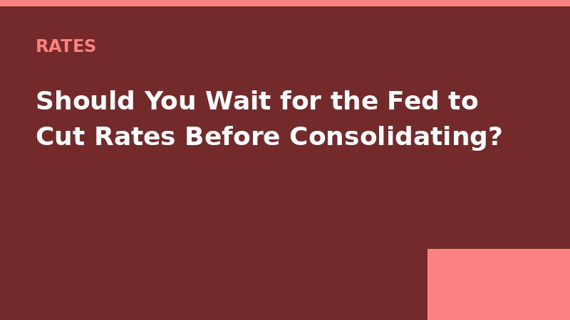

The Federal Reserve meets again around September 17, 2026. Everyone's guessing whether they'll cut rates. If they do, personal loan rates could drop by around 0.25% to 0.5% within a few weeks. If they don't, rates will probably hold steady until the next meeting in November.
So what should you do if you're thinking about consolidating credit card debt? Wait or act now?
Let me tell you about a client named Derrick. He had around $18,000 in credit card debt at an average APR of 24%. In June 2026, he got an offer from an online lender: 11.9% APR with a 3% origination fee. He was ready to sign. I told him to wait until after the Fed's July meeting.
He waited.
The Fed held steady in July. Rates didn't change. But when Derrick went back to the same lender, they'd dropped their offer to 10.7% because their internal cost of funds had gone down slightly. No Fed move — just lender competition. He ended up with a $18,000 loan at 10.7%, no origination fee, 36-month term. Monthly payment around $585. Total interest around $3,100.
If he'd taken the first offer, total interest would have been around $3,500 plus $540 in origination fees — around $4,040. He saved around $940 by waiting less than a month.
So here's my rule of thumb: if the Fed meeting is less than 4 weeks away, wait. But only if your current debt isn't spiraling out of control. If you're paying 28% on credit cards, even a small delay costs you around $15-20 per week in extra interest. That might be worth it if rates drop by 0.5% or more. You have to do the math.
Also, lenders don't always follow the Fed exactly. Sometimes they lower rates before the Fed meets, to get ahead of the competition. So start shopping now. Get quotes. If you see a rate you like, take it. You can always refinance later if rates drop more.
A 2025 study by the Consumer Financial Protection Bureau found that borrowers who got at least three quotes saved an average of around $500 on origination fees and around 0.6% on APR. That's real money.
Derrick ended up paying off his consolidation loan in 30 months, not 36, because he added $50 extra a month. He's now credit card debt-free. He's working on his emergency fund. I talk to him every few months.
I will keep posting updates on this. Check back soon.
P.S. I don't have a crystal ball about the Fed. Neither does anyone else. Ignore the pundits who say "definitely" or "guaranteed." They're guessing. So am I. But educated guessing beats random guessing.
— J.W.